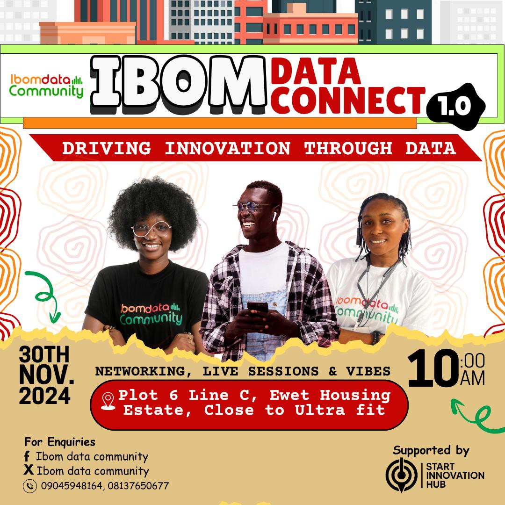
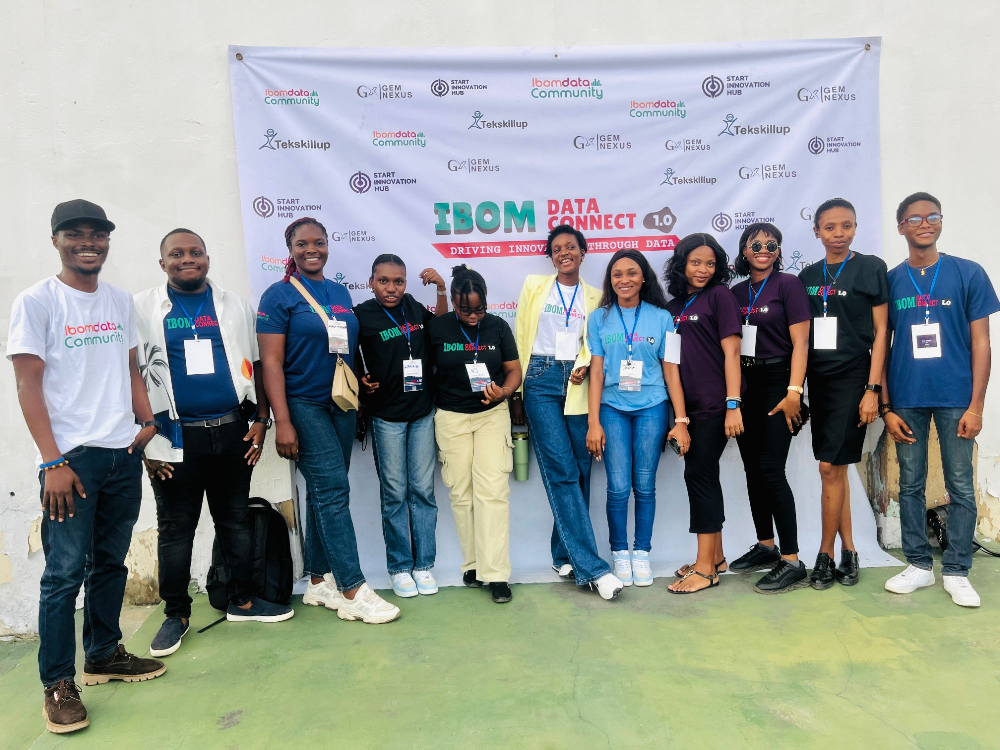
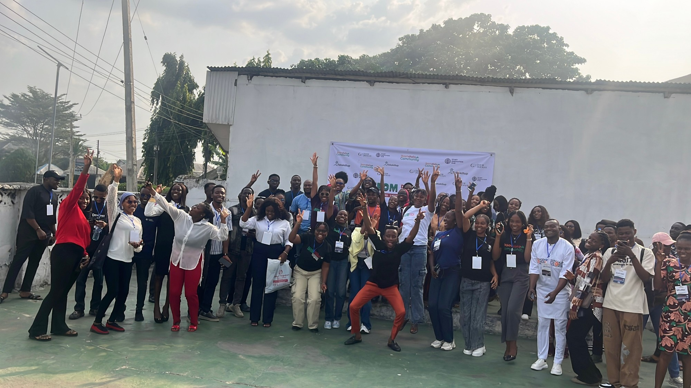
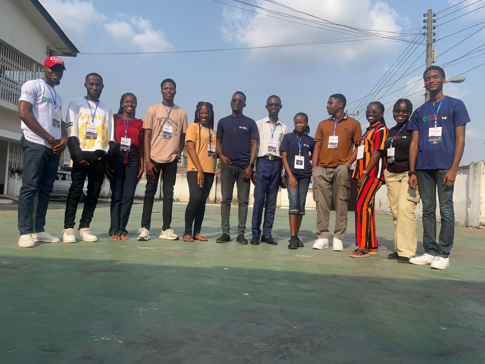
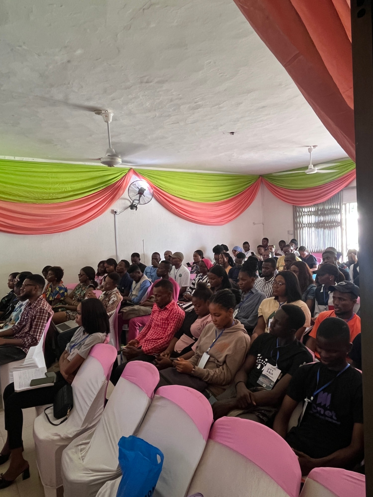

Unlocking the Power of Data in Uyo. An unforgettable day of learning, networking, and innovation that brought together 100+ data enthusiasts from across the region.

Three pillars that made Ibom Data Connect 1.0 a day to remember.
Insights from leading data experts sharing their knowledge, vision, and real-world experiences to inspire and educate attendees.
Hands-on learning opportunities designed to enhance your data skills through practical exercises and guided workshops.
Networking with data professionals and enthusiasts from across Akwa Ibom, creating lasting professional relationships.
Uyo is uniquely positioned to become a hub for data innovation in Nigeria.
Uyo is quickly becoming a hub for technological innovation in Nigeria, with a growing community of tech-savvy professionals and entrepreneurs.
Motivating beginners to start their data journey with confidence and clarity, providing accessible entry points into the data profession.
Empowering and strengthening the growing community of data analysts, scientists, and enthusiasts in the region.
Interactive workshops, inspiring keynote speeches, and valuable networking sessions defined Ibom Data Connect 1.0.




We are proudly supported by organizations dedicated to fostering innovation and driving data adoption in Nigeria.
Stay updated on all event news, insider tips, and networking opportunities. Follow us on our social channels.
Don't miss the next one! Join our community to be the first to know about upcoming events, workshops, and hackathons.
Join the Community